Summary
This experiment investigates wind tunnel test setup. Plackett-Burman screening of tunnel speed, model scale, turbulence grid, sting angle, and measurement rake position for data accuracy and repeatability.
The design varies 5 factors: speed ms (m/s), ranging from 10 to 50, model scale (ratio), ranging from 0.1 to 0.3, turb grid (bool), ranging from 0 to 1, sting deg (deg), ranging from -5 to 15, and rake pct (%chord), ranging from 50 to 150. The goal is to optimize 2 responses: data accuracy (pts) (maximize) and repeatability pct (%) (maximize). Fixed conditions held constant across all runs include tunnel = closed_return, test section = 1x1m.
A Plackett-Burman screening design was used to efficiently test 5 factors in only 8 runs. This design assumes interactions are negligible and focuses on identifying the most influential main effects.
Key Findings
For data accuracy, the most influential factors were turb grid (32.0%), speed ms (24.9%), model scale (20.8%). The best observed value was 9.6 (at speed ms = 50, model scale = 0.3, turb grid = 1).
For repeatability pct, the most influential factors were speed ms (47.4%), turb grid (26.3%), model scale (15.8%). The best observed value was 95.0 (at speed ms = 50, model scale = 0.3, turb grid = 1).
Recommended Next Steps
- Follow up with a response surface design (CCD or Box-Behnken) on the top 3–4 factors to model curvature and find the true optimum.
- Consider whether any fixed factors should be varied in a future study.
- The screening results can guide factor reduction — drop factors contributing less than 5% and re-run with a smaller, more focused design.
Experimental Setup
Factors
| Factor | Low | High | Unit |
|---|
speed_ms | 10 | 50 | m/s |
model_scale | 0.1 | 0.3 | ratio |
turb_grid | 0 | 1 | bool |
sting_deg | -5 | 15 | deg |
rake_pct | 50 | 150 | %chord |
Fixed: tunnel = closed_return, test_section = 1x1m
Responses
| Response | Direction | Unit |
|---|
data_accuracy | ↑ maximize | pts |
repeatability_pct | ↑ maximize | % |
Configuration
{
"metadata": {
"name": "Wind Tunnel Test Setup",
"description": "Plackett-Burman screening of tunnel speed, model scale, turbulence grid, sting angle, and measurement rake position for data accuracy and repeatability"
},
"factors": [
{
"name": "speed_ms",
"levels": [
"10",
"50"
],
"type": "continuous",
"unit": "m/s"
},
{
"name": "model_scale",
"levels": [
"0.1",
"0.3"
],
"type": "continuous",
"unit": "ratio"
},
{
"name": "turb_grid",
"levels": [
"0",
"1"
],
"type": "continuous",
"unit": "bool"
},
{
"name": "sting_deg",
"levels": [
"-5",
"15"
],
"type": "continuous",
"unit": "deg"
},
{
"name": "rake_pct",
"levels": [
"50",
"150"
],
"type": "continuous",
"unit": "%chord"
}
],
"fixed_factors": {
"tunnel": "closed_return",
"test_section": "1x1m"
},
"responses": [
{
"name": "data_accuracy",
"optimize": "maximize",
"unit": "pts"
},
{
"name": "repeatability_pct",
"optimize": "maximize",
"unit": "%"
}
],
"settings": {
"operation": "plackett_burman",
"test_script": "use_cases/267_wind_tunnel_setup/sim.sh"
}
}
Experimental Matrix
The Plackett-Burman Design produces 8 runs. Each row is one experiment with specific factor settings.
| Run | speed_ms | model_scale | turb_grid | sting_deg | rake_pct |
|---|
| 1 | 50 | 0.3 | 1 | -5 | 50 |
| 2 | 10 | 0.1 | 1 | 15 | 50 |
| 3 | 10 | 0.3 | 0 | 15 | 50 |
| 4 | 50 | 0.3 | 1 | 15 | 150 |
| 5 | 10 | 0.3 | 0 | -5 | 150 |
| 6 | 50 | 0.1 | 0 | 15 | 150 |
| 7 | 10 | 0.1 | 1 | -5 | 150 |
| 8 | 50 | 0.1 | 0 | -5 | 50 |
Step-by-Step Workflow
1
Preview the design
$ doe info --config use_cases/267_wind_tunnel_setup/config.json
2
Generate the runner script
$ doe generate --config use_cases/267_wind_tunnel_setup/config.json \
--output use_cases/267_wind_tunnel_setup/results/run.sh --seed 42
3
Execute the experiments
$ bash use_cases/267_wind_tunnel_setup/results/run.sh
4
Analyze results
$ doe analyze --config use_cases/267_wind_tunnel_setup/config.json
5
Get optimization recommendations
$ doe optimize --config use_cases/267_wind_tunnel_setup/config.json
6
Multi-objective optimization
With 2 competing responses, use --multi to find the best compromise via Derringer–Suich desirability.
$ doe optimize --config use_cases/267_wind_tunnel_setup/config.json --multi
7
Generate the HTML report
$ doe report --config use_cases/267_wind_tunnel_setup/config.json \
--output use_cases/267_wind_tunnel_setup/results/report.html
Features Exercised
| Feature | Value |
|---|
| Design type | plackett_burman |
| Factor types | continuous (all 5) |
| Arg style | double-dash |
| Responses | 2 (data_accuracy ↑, repeatability_pct ↑) |
| Total runs | 8 |
Analysis Results
Generated from actual experiment runs using the DOE Helper Tool.
Response: data_accuracy
Top factors: turb_grid (32.0%), speed_ms (24.9%), model_scale (20.8%).
ANOVA
| Source | DF | SS | MS | F | p-value |
|---|
| Source | DF | SS | MS | F | p-value |
| speed_ms | 1 | 3.0013 | 3.0013 | 3.630 | 0.1151 |
| model_scale | 1 | 2.1012 | 2.1012 | 2.541 | 0.1718 |
| turb_grid | 1 | 4.9612 | 4.9612 | 6.000 | 0.0580 |
| sting_deg | 1 | 0.6612 | 0.6612 | 0.800 | 0.4122 |
| rake_pct | 1 | 0.5512 | 0.5512 | 0.667 | 0.4513 |
| speed_ms*model_scale | 1 | 4.9612 | 4.9612 | 6.000 | 0.0580 |
| speed_ms*turb_grid | 1 | 2.1013 | 2.1013 | 2.541 | 0.1718 |
| speed_ms*sting_deg | 1 | 0.5512 | 0.5512 | 0.667 | 0.4513 |
| speed_ms*rake_pct | 1 | 0.6612 | 0.6612 | 0.800 | 0.4122 |
| model_scale*turb_grid | 1 | 3.0013 | 3.0013 | 3.630 | 0.1151 |
| model_scale*sting_deg | 1 | 0.1513 | 0.1513 | 0.183 | 0.6867 |
| model_scale*rake_pct | 1 | 0.2813 | 0.2813 | 0.340 | 0.5851 |
| turb_grid*sting_deg | 1 | 0.2813 | 0.2813 | 0.340 | 0.5851 |
| turb_grid*rake_pct | 1 | 0.1513 | 0.1513 | 0.183 | 0.6867 |
| sting_deg*rake_pct | 1 | 3.0013 | 3.0013 | 3.630 | 0.1151 |
| Error | (Lenth | PSE) | 5 | 4.1344 | 0.8269 |
| Total | 7 | 11.7087 | 1.6727 | | |
Pareto Chart

Main Effects Plot

Normal Probability Plot of Effects
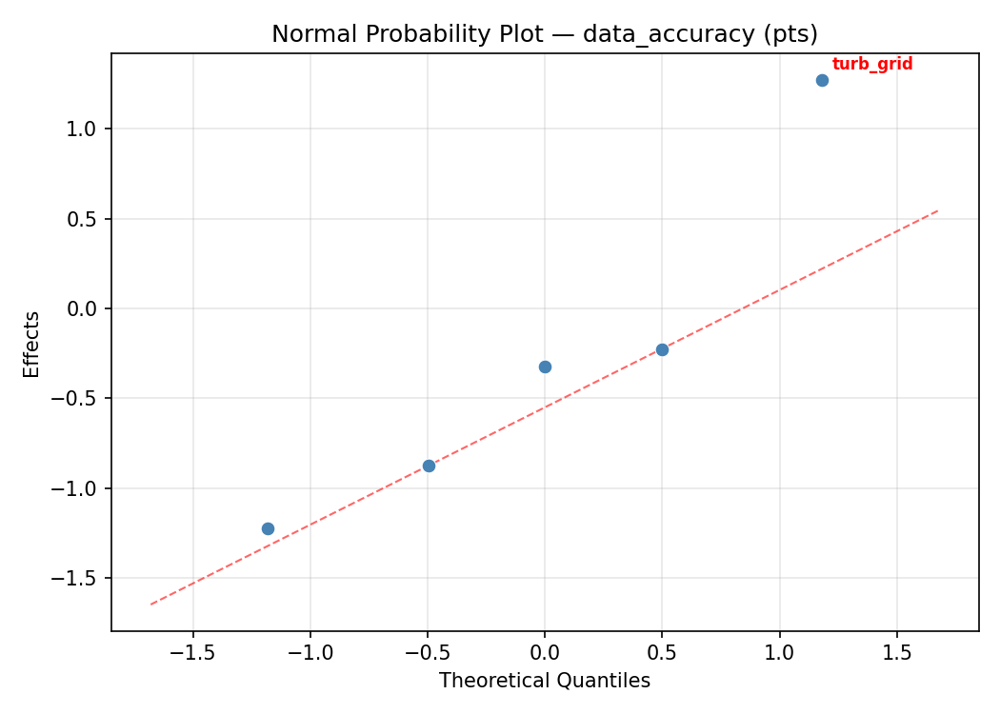
Half-Normal Plot of Effects
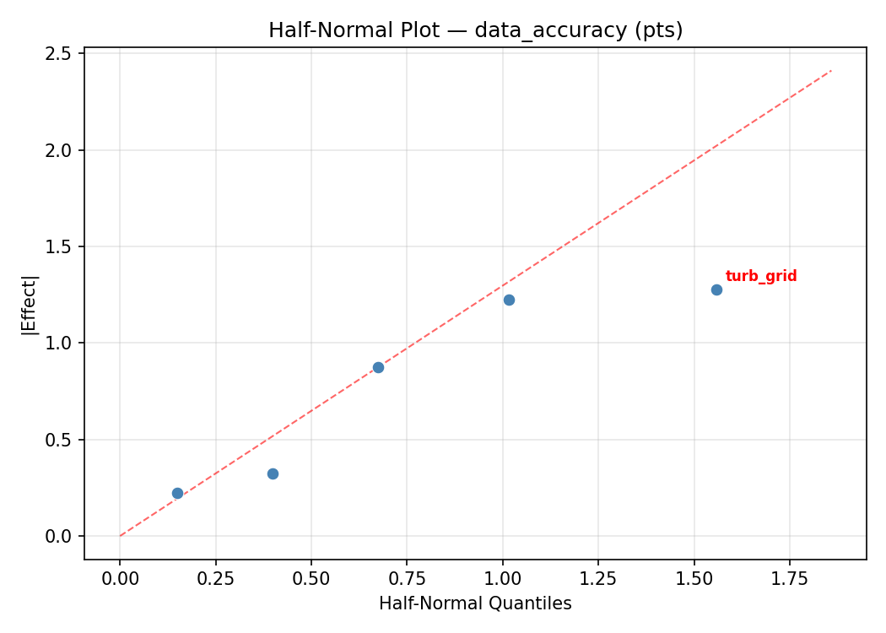
Model Diagnostics
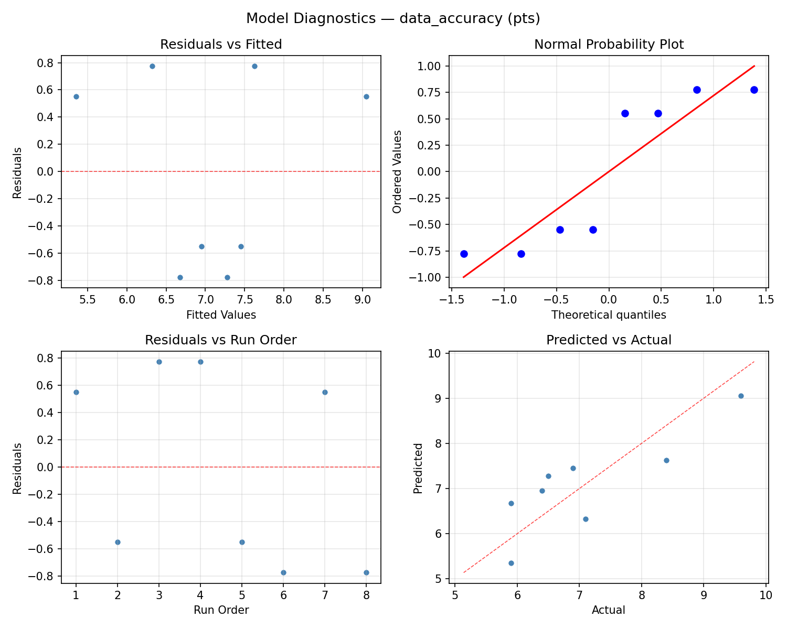
Response: repeatability_pct
Top factors: speed_ms (47.4%), turb_grid (26.3%), model_scale (15.8%).
ANOVA
| Source | DF | SS | MS | F | p-value |
|---|
| Source | DF | SS | MS | F | p-value |
| speed_ms | 1 | 10.1250 | 10.1250 | 2.160 | 0.2016 |
| model_scale | 1 | 1.1250 | 1.1250 | 0.240 | 0.6449 |
| turb_grid | 1 | 3.1250 | 3.1250 | 0.667 | 0.4513 |
| sting_deg | 1 | 0.1250 | 0.1250 | 0.027 | 0.8767 |
| rake_pct | 1 | 0.1250 | 0.1250 | 0.027 | 0.8767 |
| speed_ms*model_scale | 1 | 3.1250 | 3.1250 | 0.667 | 0.4513 |
| speed_ms*turb_grid | 1 | 1.1250 | 1.1250 | 0.240 | 0.6449 |
| speed_ms*sting_deg | 1 | 0.1250 | 0.1250 | 0.027 | 0.8767 |
| speed_ms*rake_pct | 1 | 0.1250 | 0.1250 | 0.027 | 0.8767 |
| model_scale*turb_grid | 1 | 10.1250 | 10.1250 | 2.160 | 0.2016 |
| model_scale*sting_deg | 1 | 10.1250 | 10.1250 | 2.160 | 0.2016 |
| model_scale*rake_pct | 1 | 36.1250 | 36.1250 | 7.707 | 0.0391 |
| turb_grid*sting_deg | 1 | 36.1250 | 36.1250 | 7.707 | 0.0391 |
| turb_grid*rake_pct | 1 | 10.1250 | 10.1250 | 2.160 | 0.2016 |
| sting_deg*rake_pct | 1 | 10.1250 | 10.1250 | 2.160 | 0.2016 |
| Error | (Lenth | PSE) | 5 | 23.4375 | 4.6875 |
| Total | 7 | 60.8750 | 8.6964 | | |
Pareto Chart

Main Effects Plot
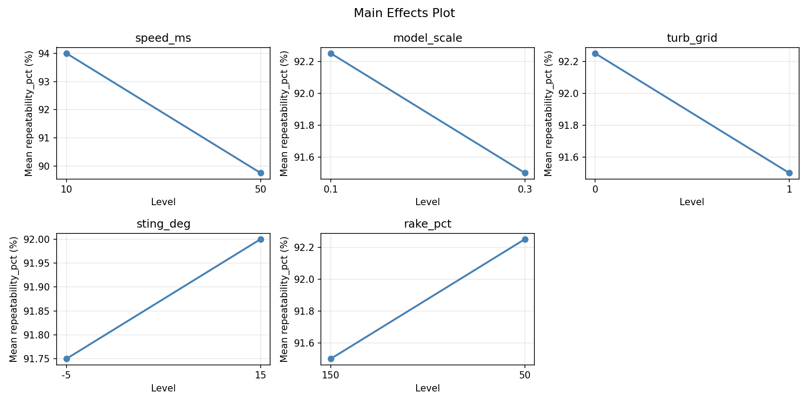
Normal Probability Plot of Effects
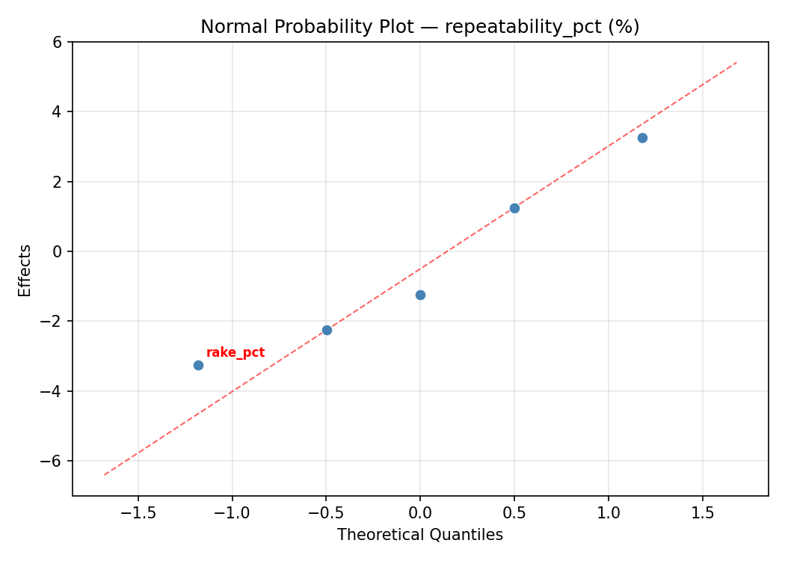
Half-Normal Plot of Effects
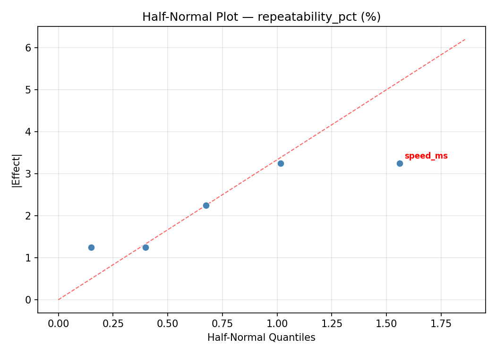
Model Diagnostics
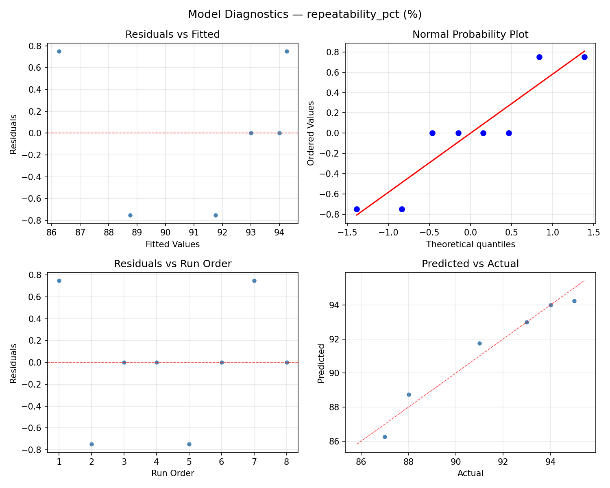
Response Surface Plots
3D surfaces fitted with quadratic RSM. Red dots are observed data points.
data accuracy model scale vs rake pct
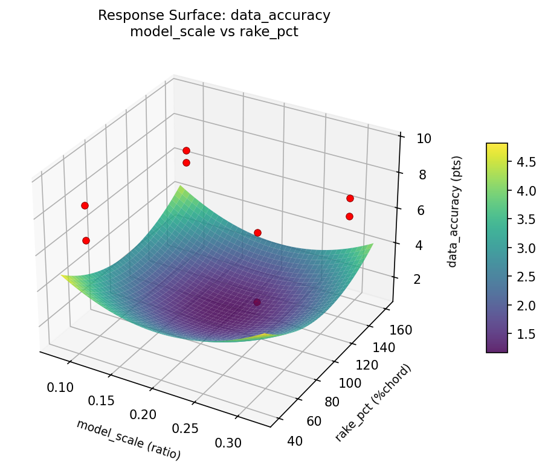
data accuracy model scale vs sting deg

data accuracy model scale vs turb grid
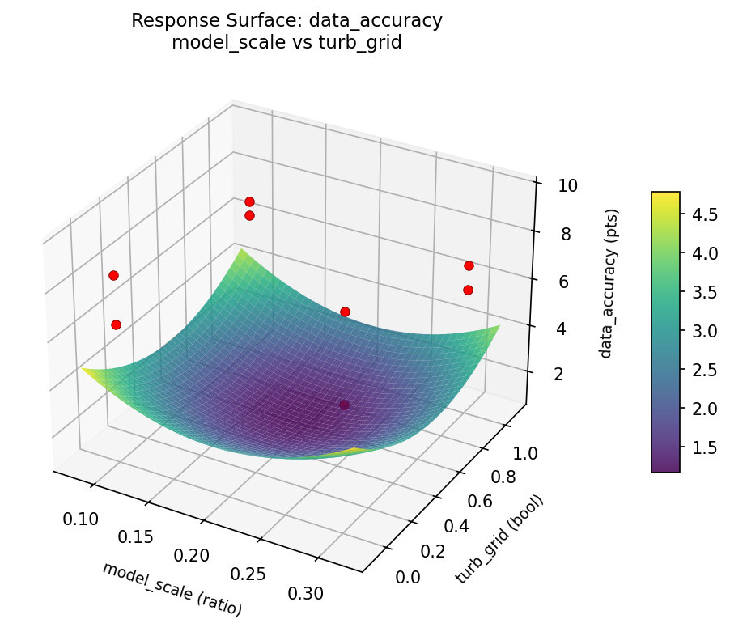
data accuracy speed ms vs model scale

data accuracy speed ms vs rake pct
data accuracy speed ms vs sting deg

data accuracy speed ms vs turb grid

data accuracy sting deg vs rake pct
data accuracy turb grid vs rake pct
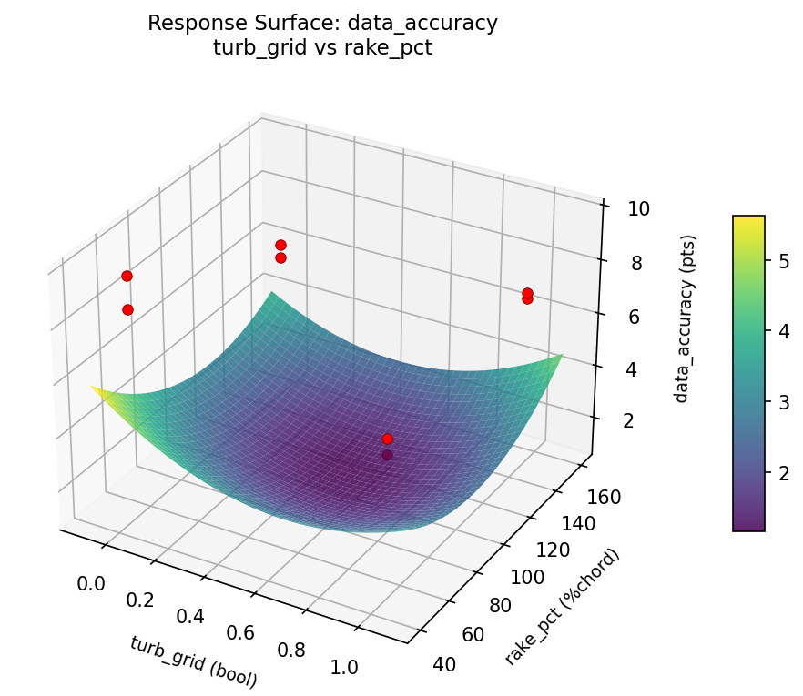
data accuracy turb grid vs sting deg
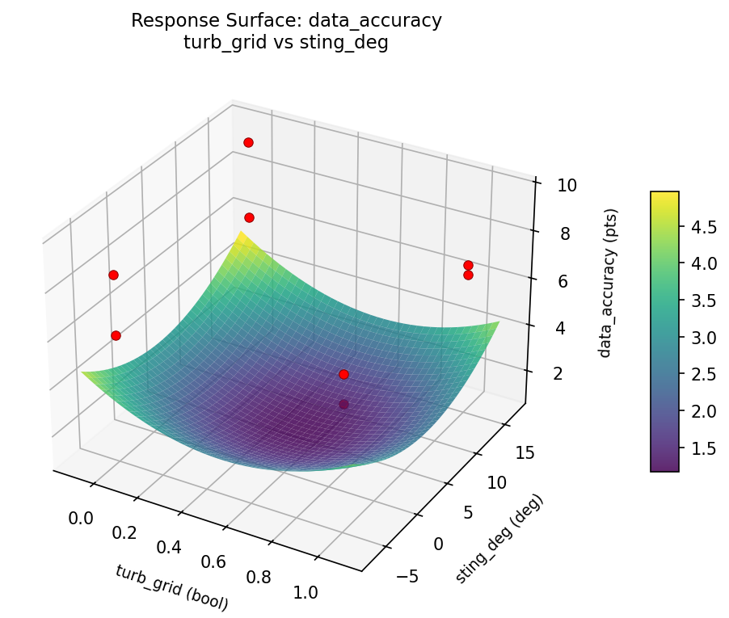
repeatability pct model scale vs rake pct

repeatability pct model scale vs sting deg
repeatability pct model scale vs turb grid

repeatability pct speed ms vs model scale
repeatability pct speed ms vs rake pct
repeatability pct speed ms vs sting deg

repeatability pct speed ms vs turb grid
repeatability pct sting deg vs rake pct
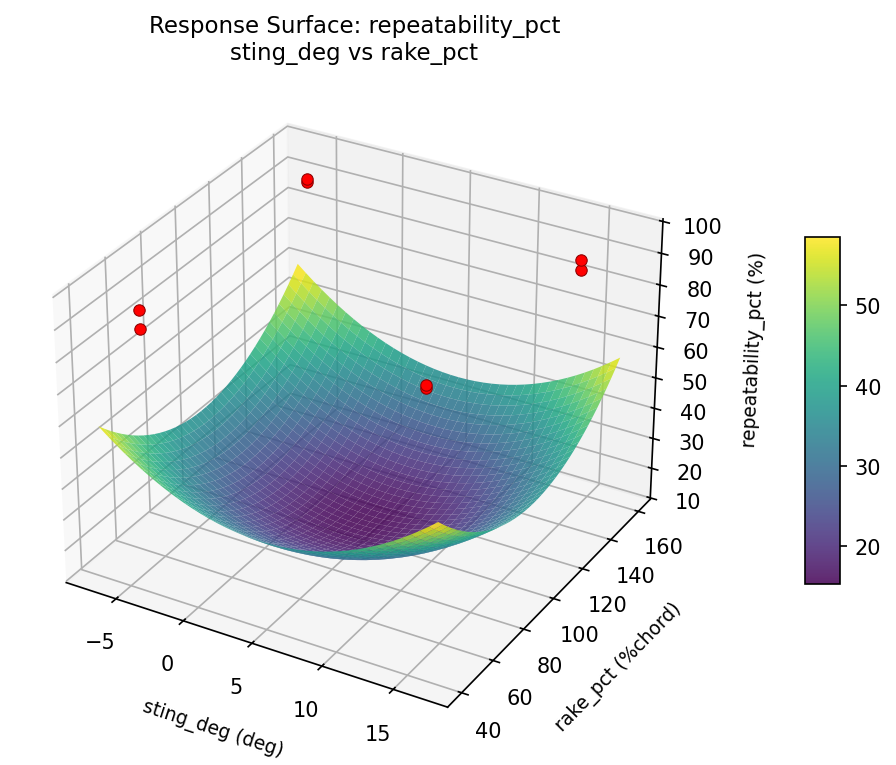
repeatability pct turb grid vs rake pct
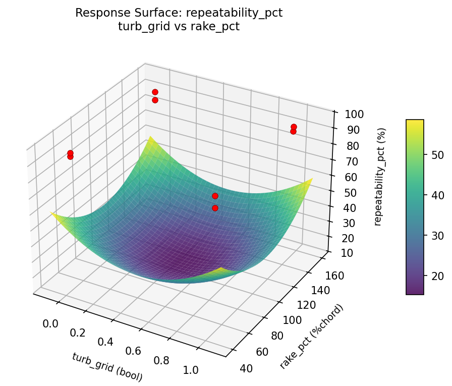
repeatability pct turb grid vs sting deg

Multi-Objective Optimization
When responses compete, Derringer–Suich desirability finds the best compromise.
Each response is scaled to a 0–1 desirability, then combined via a weighted geometric mean.
Overall Desirability
D = 0.9545
Per-Response Desirability
| Response | Weight | Desirability | Predicted | Dir |
|---|
data_accuracy |
1.5 |
|
9.60 0.9545 9.60 pts |
↑ |
repeatability_pct |
1.0 |
|
95.00 0.9545 95.00 % |
↑ |
Recommended Settings
| Factor | Value |
|---|
speed_ms | 50 m/s |
model_scale | 0.3 ratio |
turb_grid | 1 bool |
sting_deg | 15 deg |
rake_pct | 150 %chord |
Source: from observed run #1
Trade-off Summary
Sacrifice = how much worse than single-objective best.
| Response | Predicted | Best Observed | Sacrifice |
|---|
repeatability_pct | 95.00 | 95.00 | +0.00 |
Top 3 Runs by Desirability
| Run | D | Factor Settings |
|---|
| #4 | 0.6859 | speed_ms=50, model_scale=0.1, turb_grid=0, sting_deg=-5, rake_pct=50 |
| #3 | 0.4887 | speed_ms=10, model_scale=0.3, turb_grid=0, sting_deg=15, rake_pct=50 |
Model Quality
| Response | R² | Type |
|---|
repeatability_pct | 0.7823 | linear |
Full Multi-Objective Output
============================================================
MULTI-OBJECTIVE OPTIMIZATION
Method: Derringer-Suich Desirability Function
============================================================
Overall desirability: D = 0.9545
Response Weight Desirability Predicted Direction
---------------------------------------------------------------------
data_accuracy 1.5 0.9545 9.60 pts ↑
repeatability_pct 1.0 0.9545 95.00 % ↑
Recommended settings:
speed_ms = 50 m/s
model_scale = 0.3 ratio
turb_grid = 1 bool
sting_deg = 15 deg
rake_pct = 150 %chord
(from observed run #1)
Trade-off summary:
data_accuracy: 9.60 (best observed: 9.60, sacrifice: +0.00)
repeatability_pct: 95.00 (best observed: 95.00, sacrifice: +0.00)
Model quality:
data_accuracy: R² = 0.3200 (linear)
repeatability_pct: R² = 0.7823 (linear)
Top 3 observed runs by overall desirability:
1. Run #1 (D=0.9545): speed_ms=50, model_scale=0.3, turb_grid=1, sting_deg=15, rake_pct=150
2. Run #4 (D=0.6859): speed_ms=50, model_scale=0.1, turb_grid=0, sting_deg=-5, rake_pct=50
3. Run #3 (D=0.4887): speed_ms=10, model_scale=0.3, turb_grid=0, sting_deg=15, rake_pct=50
Full Analysis Output
=== Main Effects: data_accuracy ===
Factor Effect Std Error % Contribution
--------------------------------------------------------------
turb_grid -1.5750 0.4573 32.0%
speed_ms 1.2250 0.4573 24.9%
model_scale -1.0250 0.4573 20.8%
sting_deg -0.5750 0.4573 11.7%
rake_pct 0.5250 0.4573 10.7%
=== ANOVA Table: data_accuracy ===
Source DF SS MS F p-value
-----------------------------------------------------------------------------
speed_ms 1 3.0013 3.0013 3.630 0.1151
model_scale 1 2.1012 2.1012 2.541 0.1718
turb_grid 1 4.9612 4.9612 6.000 0.0580
sting_deg 1 0.6612 0.6612 0.800 0.4122
rake_pct 1 0.5512 0.5512 0.667 0.4513
speed_ms*model_scale 1 4.9612 4.9612 6.000 0.0580
speed_ms*turb_grid 1 2.1013 2.1013 2.541 0.1718
speed_ms*sting_deg 1 0.5512 0.5512 0.667 0.4513
speed_ms*rake_pct 1 0.6612 0.6612 0.800 0.4122
model_scale*turb_grid 1 3.0013 3.0013 3.630 0.1151
model_scale*sting_deg 1 0.1513 0.1513 0.183 0.6867
model_scale*rake_pct 1 0.2813 0.2813 0.340 0.5851
turb_grid*sting_deg 1 0.2813 0.2813 0.340 0.5851
turb_grid*rake_pct 1 0.1513 0.1513 0.183 0.6867
sting_deg*rake_pct 1 3.0013 3.0013 3.630 0.1151
Error (Lenth PSE) 5 4.1344 0.8269
Total 7 11.7087 1.6727
Note: Error estimated using Lenth's pseudo-standard-error (unreplicated design)
=== Interaction Effects: data_accuracy ===
Factor A Factor B Interaction % Contribution
------------------------------------------------------------------------
speed_ms model_scale -1.5750 21.1%
model_scale turb_grid 1.2250 16.4%
sting_deg rake_pct -1.2250 16.4%
speed_ms turb_grid -1.0250 13.8%
speed_ms rake_pct 0.5750 7.7%
speed_ms sting_deg -0.5250 7.0%
model_scale rake_pct -0.3750 5.0%
turb_grid sting_deg 0.3750 5.0%
model_scale sting_deg -0.2750 3.7%
turb_grid rake_pct 0.2750 3.7%
=== Summary Statistics: data_accuracy ===
speed_ms:
Level N Mean Std Min Max
------------------------------------------------------------
10 4 6.4750 0.4924 5.9000 7.1000
50 4 7.7000 1.6310 5.9000 9.6000
model_scale:
Level N Mean Std Min Max
------------------------------------------------------------
0.1 4 7.6000 1.7068 5.9000 9.6000
0.3 4 6.5750 0.5377 5.9000 7.1000
turb_grid:
Level N Mean Std Min Max
------------------------------------------------------------
0 4 7.8750 1.4175 6.4000 9.6000
1 4 6.3000 0.4899 5.9000 6.9000
sting_deg:
Level N Mean Std Min Max
------------------------------------------------------------
-5 4 7.3750 1.5735 5.9000 9.6000
15 4 6.8000 1.0985 5.9000 8.4000
rake_pct:
Level N Mean Std Min Max
------------------------------------------------------------
150 4 6.8250 1.1927 5.9000 8.4000
50 4 7.3500 1.5155 6.4000 9.6000
=== Main Effects: repeatability_pct ===
Factor Effect Std Error % Contribution
--------------------------------------------------------------
speed_ms 2.2500 1.0426 47.4%
turb_grid -1.2500 1.0426 26.3%
model_scale -0.7500 1.0426 15.8%
sting_deg 0.2500 1.0426 5.3%
rake_pct 0.2500 1.0426 5.3%
=== ANOVA Table: repeatability_pct ===
Source DF SS MS F p-value
-----------------------------------------------------------------------------
speed_ms 1 10.1250 10.1250 2.160 0.2016
model_scale 1 1.1250 1.1250 0.240 0.6449
turb_grid 1 3.1250 3.1250 0.667 0.4513
sting_deg 1 0.1250 0.1250 0.027 0.8767
rake_pct 1 0.1250 0.1250 0.027 0.8767
speed_ms*model_scale 1 3.1250 3.1250 0.667 0.4513
speed_ms*turb_grid 1 1.1250 1.1250 0.240 0.6449
speed_ms*sting_deg 1 0.1250 0.1250 0.027 0.8767
speed_ms*rake_pct 1 0.1250 0.1250 0.027 0.8767
model_scale*turb_grid 1 10.1250 10.1250 2.160 0.2016
model_scale*sting_deg 1 10.1250 10.1250 2.160 0.2016
model_scale*rake_pct 1 36.1250 36.1250 7.707 0.0391
turb_grid*sting_deg 1 36.1250 36.1250 7.707 0.0391
turb_grid*rake_pct 1 10.1250 10.1250 2.160 0.2016
sting_deg*rake_pct 1 10.1250 10.1250 2.160 0.2016
Error (Lenth PSE) 5 23.4375 4.6875
Total 7 60.8750 8.6964
Note: Error estimated using Lenth's pseudo-standard-error (unreplicated design)
=== Interaction Effects: repeatability_pct ===
Factor A Factor B Interaction % Contribution
------------------------------------------------------------------------
model_scale rake_pct -4.2500 21.2%
turb_grid sting_deg 4.2500 21.2%
model_scale turb_grid 2.2500 11.2%
model_scale sting_deg -2.2500 11.2%
turb_grid rake_pct 2.2500 11.2%
sting_deg rake_pct -2.2500 11.2%
speed_ms model_scale -1.2500 6.2%
speed_ms turb_grid -0.7500 3.8%
speed_ms sting_deg -0.2500 1.2%
speed_ms rake_pct -0.2500 1.2%
=== Summary Statistics: repeatability_pct ===
speed_ms:
Level N Mean Std Min Max
------------------------------------------------------------
10 4 90.7500 3.7749 87.0000 94.0000
50 4 93.0000 1.6330 91.0000 95.0000
model_scale:
Level N Mean Std Min Max
------------------------------------------------------------
0.1 4 92.2500 3.5940 87.0000 95.0000
0.3 4 91.5000 2.6458 88.0000 94.0000
turb_grid:
Level N Mean Std Min Max
------------------------------------------------------------
0 4 92.5000 3.1091 88.0000 95.0000
1 4 91.2500 3.0957 87.0000 94.0000
sting_deg:
Level N Mean Std Min Max
------------------------------------------------------------
-5 4 91.7500 3.5940 87.0000 95.0000
15 4 92.0000 2.7080 88.0000 94.0000
rake_pct:
Level N Mean Std Min Max
------------------------------------------------------------
150 4 91.7500 3.2016 87.0000 94.0000
50 4 92.0000 3.1623 88.0000 95.0000
Optimization Recommendations
=== Optimization: data_accuracy ===
Direction: maximize
Best observed run: #1
speed_ms = 50
model_scale = 0.3
turb_grid = 1
sting_deg = -5
rake_pct = 50
Value: 9.6
RSM Model (linear, R² = 0.8683, Adj R² = 0.5389):
Coefficients:
intercept +7.0875
speed_ms +0.7875
model_scale +0.1125
turb_grid +0.0125
sting_deg -0.5125
rake_pct -0.6125
Predicted optimum (from linear model, at observed points):
speed_ms = 50
model_scale = 0.3
turb_grid = 1
sting_deg = -5
rake_pct = 50
Predicted value: 9.1250
Surface optimum (via L-BFGS-B, linear model):
speed_ms = 50
model_scale = 0.3
turb_grid = 1
sting_deg = -5
rake_pct = 50
Predicted value: 9.1250
Model quality: Good fit — general trends are captured, some noise remains.
Factor importance:
1. speed_ms (effect: 1.6, contribution: 38.7%)
2. rake_pct (effect: 1.2, contribution: 30.1%)
3. sting_deg (effect: -1.0, contribution: 25.2%)
4. model_scale (effect: 0.2, contribution: 5.5%)
5. turb_grid (effect: 0.0, contribution: 0.6%)
=== Optimization: repeatability_pct ===
Direction: maximize
Best observed run: #1
speed_ms = 50
model_scale = 0.3
turb_grid = 1
sting_deg = -5
rake_pct = 50
Value: 95.0
RSM Model (linear, R² = 0.6345, Adj R² = -0.2793):
Coefficients:
intercept +91.8750
speed_ms +0.6250
model_scale -0.1250
turb_grid -0.8750
sting_deg -1.8750
rake_pct +0.3750
Predicted optimum (from linear model, at observed points):
speed_ms = 50
model_scale = 0.1
turb_grid = 0
sting_deg = -5
rake_pct = 50
Predicted value: 95.0000
Surface optimum (via L-BFGS-B, linear model):
speed_ms = 50
model_scale = 0.1
turb_grid = 0
sting_deg = -5
rake_pct = 150
Predicted value: 95.7500
Model quality: Moderate fit — use predictions directionally, not precisely.
Factor importance:
1. sting_deg (effect: -3.8, contribution: 48.4%)
2. turb_grid (effect: -1.8, contribution: 22.6%)
3. speed_ms (effect: 1.2, contribution: 16.1%)
4. rake_pct (effect: -0.8, contribution: 9.7%)
5. model_scale (effect: -0.2, contribution: 3.2%)